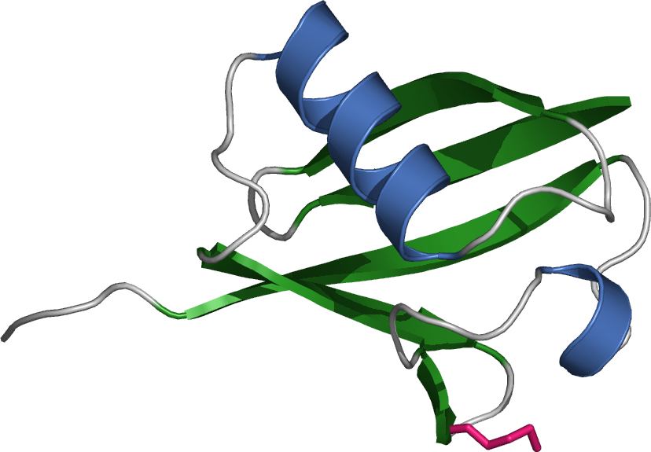

Python in 4 hours
Life Sciences Department
Created by Brian Jimenez / @irrati0nal
Program
- Introduction
- The ecosystem
- Python syntax and native data-types
- Code organization: modules, packages and magic
- Functional programming
- Object oriented program design
- Unit testing
- Advanced topics and performance tuning
1. Introduction
What is Python?
Python is an interpreted, interactive, object-oriented programming language and it is portable and extensible in C or C++
"History"
Started its development by Guido van Rossum (BDFL, Benevolent Dictator for Life) during the 1989 Christimas holiday.
In February 1991 first public version posted to USENET.
Monty Python's Flying Circus and the name of the language is not just a coincidence.
- Python 2.0 released on 16 October 2000
- Python 3.0 on 3 December 2008.
The Zen of Python (PEP20)
PEP is a Python Enhancement Proposal
- Beautiful is better than ugly.
- Explicit is better than implicit.
- Simple is better than complex.
- Complex is better than complicated.
- ...
- Readability counts
Try this:
$ python
>>> import this
Being pythonic is about idioms, not religion
Idioms: What you know from other programming languages may not be always useful, natural or appropiate in Python.
C syntax:
for (i=0; i < mylist_length; i++) {
do_something(mylist[i]);
}
Pythonic way:
for element in mylist:
do_something(element)
2. The ecosystem
The standard library
Small core, large standard library "batteries included".
- string: common string operations
- datetime: basic date and time types
- math, cmath, decimal, fractions: mathematical functions
- os.path, glob, shutil: File-system operations
- os: Operating system interfaces
- sys, subprocess, email, json, urllib2...
Python Package Index
PyPI is the official Python repository for third-party software. Is the correct place to share your python packages with other python users. Same as CPAN in Perl community.
It is maintained by the Python Software Foundation and referenced by the pip command.
Important scientific libraries
Visit the python wiki for a more comprehensive list: Numeric and Scientific.
Scientific software
Python implementations
CPython is the reference implementation, but not the only one:
- PyPy: versions 2.7.6 and 3.2.5. JIT compiler, stackless (threads, no GIL)
- Jython: Python to Java bytecode
- IronPython: .NET framework
- StacklessPython
Installing modules
If it's your lucky day:
sudo apt-get install python-numpy
*Note this is a system-wide installation. Bad idea? Maybe.
Python Distribution Utilities (Distutils)
You download a python packaged file (python egg) which contains a README.txt and a setup.py files:
$ python setup.py build
$ python setup.py install
Highly recommended: specify an installation directory via prefix:
python setup.py install --prefix=/home/brian/python
pip vs easy_install
easy_install was released in 2004, downloads and installs automatically packages (and dependencies) from PyPI. But easy_install does not support the new Wheel binary package format while pip does.
Furthermore, pip (released in 2008) supports uninstalling packages. You should definetely use pip.
$ pip search bio
biotools - A bunch of bioinformatics utilities.
moa - Moa - command-line workflows (in bioinformatics)
...
virtualenv
A tool to create isolated Python environments
It solves in an ellegant way how to install two version of the same python extension in order to use them at the same time.
$ virtualenv ENV
New python executable in ENV/bin/python
Installing setuptools, pip...done.
$ cd ENV
$ ls
bin include lib local
$ source bin/activate
(ENV)brian@daibutsu /home/brian/python/ENV $ pip install spam
Downloading/unpacking spam
Downloading spam-4.0.1.tar.gz
Running setup.py (path:/var/www/python/ENV/build/spam/setup.py) egg_info
for package spam
Installing collected packages: spam
Running setup.py install for spam
Successfully installed spam
Cleaning up...
virtualenv (II)
(ENV)brian@daibutsu /home/brian/ENV $ python
Python 2.7.6 (default, Mar 22 2014, 22:59:56)
[GCC 4.8.2] on linux2
Type "help", "copyright", "credits" or "license" for more information.
>>> import spam
>>> dir(spam)
['__builtins__', '__doc__', '__file__', '__name__', '__package__',
'__path__']
Deactivate the virtualenv:
(ENV)brian@daibutsu /home/brian/ENV $ deactivate
brian@daibutsu /home/brian/ENV $ python
Python 2.7.6 (default, Mar 22 2014, 22:59:56)
[GCC 4.8.2] on linux2
Type "help", "copyright", "credits" or "license" for more information.
>>> import spam
Traceback (most recent call last):
File "stdin", line 1, in module
ImportError: No module named spam
3. Python syntax and native data-types
Whitespaces
- No hard tabs
- 4 spaces per indentation level.
- Never mix them :(
- Read PEP-8
More about style
- joined_lower preferred over camelCase
- ClassName
- interface, _internal, __private (requires further explanation)
- CONSTANT_VARIABLE
- variable_collision_
Explicit and implicit line joining
Explicit
leap_year = year % 4 == 0 and year % 100 != 0 \
or year % 400 == 0
Implicit
month_names = ['Januari', 'Februari', 'Maart', # These are the
'April', 'Mei', 'Juni', # Dutch names
'Juli', 'Augustus', 'September', # for the months
'Oktober', 'November', 'December'] # of the year
Numeric types
int_var = sys.maxint
float_var = int_var / 2.0
long_var = int_var + 1
complex_var = 1.5 + 3j
# Some operations
f = float(int_var)
i = int(float_var)
round(f)
x = 2 ** 5
math.floor(f)
Sequence types
string_literal = 'Python course'
unicode_literal = u'España'
planets = ['Mercury', 'Venus', 'Earth', 'Mars',
'Jupiter', 'Saturn', 'Uranus', 'Neptune']
prime_numbers = [2, 3, 5, 7]
country_codes = {34: 'Spain', 376: 'Andorra', 41: 'Switzerland', 424: None}
birth_year = ('Stephen Hawking', 1942)
Operations on sequence types
>>> print string_literal + ' is cool'
Python course is cool
planets.append('Mercury')
>>> print planets
['Mercury', 'Venus', 'Earth', 'Mars', 'Jupiter',
'Saturn', 'Uranus', 'Neptune', 'Pluto']
>>> planets[-1]
'Pluto'
>>> planets[:4]
['Mercury', 'Venus', 'Earth', 'Mars']
>>> planets[0:4]
['Mercury', 'Venus', 'Earth', 'Mars']
>>> planets[-1] = 'Pluto is not a planet'
Operations on sequence types
>>> planets
['Mercury', 'Venus', 'Earth', 'Mars', 'Jupiter', 'Saturn',
'Uranus', 'Neptune', 'Pluto']
>>> planets.remove('Pluto')
>>> planets
['Mercury', 'Venus', 'Earth', 'Mars',
'Jupiter', 'Saturn', 'Uranus', 'Neptune']
>>> del planets[5]
>>> planets
['Mercury', 'Venus', 'Earth', 'Mars',
'Jupiter', 'Uranus', 'Neptune']
>>> del planets[5:7]
>>> planets
['Mercury', 'Venus', 'Earth', 'Mars', 'Jupiter']
birth_year = 'Stephen Hawking', 1942 # ',' constructor
>>> birth_year[1] = 1943 # Error!
Useful idioms
# Swap values
b, a = a, b
# Unpacking
atom_name, atom_number, residue_name, chain_id = ['CA', 1, 'ALA', 'A']
zeroes = [0] * 100
spaces = 100 * " "
>>> range(10)
[0, 1, 2, 3, 4, 5, 6, 7, 8, 9]
>>> xrange(10)
xrange(10)
>>> for i in xrange(10):
... print i,
0 1 2 3 4 5 6 7 8 9
List comprehension
# Non-idiomatic
results = []
for i in range(20):
if i % 2 == 0:
results.append(i)
# Pythonista style
results = [x for x in xrange(20) if x % 2 == 0]
Iterating
Over a list
monsters = ['Kraken', 'Leviathan', 'Uroborus', 'Hydra']
# Method 1
for monster in monsters:
print monster
# Get the index in the array
for i, monster in enumerate(monsters):
print i, monster
Iterating
Over a dictionary
country_codes = {34: 'Spain', 376: 'Andorra', 41: 'Switzerland', 424: None}
# By key
for country_code in country_codes.keys():
print country_code
# By value
for country in country_codes.values():
print country
# By both
for country_code, country in country_codes.iteritems():
print country_code, country
String concatenation
>>> my_list = ['k', 'o', 'n', 'n', 'i', 'c', 'h', 'i', 'w', 'a']
# Method 1
s = ''
for c in my_list:
s += c
# Method 2
s = ''
for c in my_list:
s = "%s%s" % (s, c)
# Idiomatic
''.join(my_list)
First example
import sys
def say(message):
"""Says something"""
print message
if __name__ == "__main__":
say(sys.argv[1])
To execute it (example_1.py):
$ python example_1.py 'Hello World'
Hello World
Second example
(example_2.py):
import sys
def usage():
print 'usage: %s message' % sys.argv[0]
def say(message):
"""Says something"""
print message
if __name__ == "__main__":
if len(sys.argv[1:]) != 1:
usage()
raise SystemExit('Wrong command line')
say(sys.argv[1])
Additional control words
- if, elif, else
- break, continue
- pass
- swtch = if..elif..elif..else
Defining functions
def attacked (monster, survivors=0):
print 'A %s attacked our village!' % monster
if survivors:
print 'Luckily, %d people survive' % survivors
>>> attacked('Kraken', 42)
A Kraken attacked our village!
Luckily, 42 people survive
>>> attacked('Cthulhu')
A Cthulhu attacked our village!
Reading from files
# Method 1
f = open('a_file.txt')
for line in f:
print line,
f.close()
# Method 2
f = open('a_file.txt')
lines = f.readlines()
for line in f:
print line,
f.close()
# Method 3
with open('a_file.txt') as f:
for line in f.readlines():
print line,
Writing to files
import os
out = open('a_file.txt', 'w')
for i in xrange(10):
out.write("%d%s" % (i, os.linesep))
In python, everything is an object
>>> eggs = 10
>>> print eggs.__add__
<method-wrapper '__add__' of int object at 0x184d080>
>>> print dir(eggs)
['__abs__', '__add__', '__and__', '__class__', '__cmp__', '__coerce__', '__delattr__', '__div__', '__divmod__', '__doc__', '__float__', '__floordiv__', '__format__', '__getattribute__', '__getnewargs__', '__hash__', '__hex__', '__index__', '__init__', '__int__', '__invert__', '__long__', '__lshift__', '__mod__', '__mul__', '__neg__', '__new__', '__nonzero__', '__oct__', '__or__', '__pos__', '__pow__', '__radd__', '__rand__', '__rdiv__', '__rdivmod__', '__reduce__', '__reduce_ex__', '__repr__', '__rfloordiv__', '__rlshift__', '__rmod__', '__rmul__', '__ror__', '__rpow__', '__rrshift__', '__rshift__', '__rsub__', '__rtruediv__', '__rxor__', '__setattr__', '__sizeof__', '__str__', '__sub__', '__subclasshook__', '__truediv__', '__trunc__', '__xor__', 'bit_length', 'conjugate', 'denominator', 'imag', 'numerator', 'real']
Common mistake
Mutable and immutable objects
def f(a, L=[]):
L.append(a)
return L
>>> print f(1)
[1]
>>> print f(2)
[1, 2]
def f(a, L=None):
if L is None:
L = []
L.append(a)
return L
>>> print f(1)
[1]
>>> print f(2)
[2]
Challenge 1
Write a program which will find all numbers which ara divisible by 7, but are not a multiple of 5, or by 13 in the range [42..1200].
Print the numbers in reverse order and comma separated.
4. Code organization: modules, packages and magic
Modules
A module is any python source file on your python library path. A file called triceratops.py corresponds to a module named triceratops.
import triceratops
print triceratops.NUMBER_OF_HORNS
Packages
A package is a regular folder where a __init__.py file has been created. A package is used for the organization of modules. A package can contain any sub-folder.
We move our triceratops.py module to a folder called dinosaur.
import dinosaur.triceratops
import dinosaur.apatosaurus
print dinosaur.triceratops.NUMBER_OF_HORNS
print dinosaur.apatosaurus.NUMBER_OF_HORNS
Partial import
It is inconvenient to use names as dinosaur.triceratops.NUMBER_OF_HORNS.
Instead, we import certain parts in our scope.
from dinosaur.triceratops import NUMBER_OF_HORNS
from dinosaur.apatosaurus import NUMBER_OF_HORNS as APATOSAURUS_HORNS
print NUMBER_OF_HORNS, APATOSAURUS_HORNS
Anti-idiom
from module import *
However, it is okay to use it to save typing in interactive sessions.
import *
If you allow your client to import *, you can define the modules to be imported automatically by defining an __all__ variable in __init__.py file:
dinosaurs/
__init__.py
sauropod/
__init__.py
apatosaurus.py
diplodocus.py
camarasaurus.py
# sauropod.__init__.py file
__all__ = ['apatosaurus', 'diplodocus', 'camarasaurus']
>>> from dinosaurs.sauropod import *
print apatosaurus.NECK_LENGTH
Importing modules
A module can contain executable statements as well as function definitions. These statements are intended to initialize the module.
They are executed only the first time the module name is encountered in an import statement
if __name__ == "__main__":
print 'Only executed when calling it as a script'
The module search path
The order for searching for a given module is:
- the current directory or the directory containing the input script
- PYTHONPATH
- the folder where python is installed
Take into account that path can be modified in run-time:
import sys
sys.path.append('/home/brian/python/dinosaurs')
5. Functional programming
“Functional programming is like describing your problem to a mathematician.
Imperative programming is like giving instructions to an idiot.”

6. Object oriented program design
Object oriented programming
Paradigm where objects have data fields and associated procedures (methods).
An object is an abstract data type with the addition of polymorphism and inheritance.
The goal is to design modular and reusable software.
- Encapsulation and information hiding.
Avoid Spaghetti code.
Object & Class
A class is a binding of methods and variables in a single unit.
An object is an instance of a class.
A class is a template which defines the methods (behavior) and variables (state) to be included in a particular object.
If a class is an instance of a class too, then this class is called metaclass.
Object & Class, examples
- Complex is a class, Ubiquitin is an object.
- ResearchCenter is a class, BSC is an object.
- Monster is a class, Leviathan is an object.
- Animal is a metaclass, a dog is a class and my dog is an object.

Simple class in Python
class Monster(object):
"""Represents a mythological creature"""
pass
>>> kraken = Monster()
>>> type(kraken)
<class '__main__.Monster'>
>>> isinstance(kraken, Monster)
True
>>> leviathan = Monster()
>>> type(leviathan) == type(kraken)
True
Constructor
class Monster(object):
"""Represents a mythological creature"""
def __init__(self, origin):
self.origin = origin
>>> kraken = Monster('Scandinavia')
>>> kraken.origin
'Scandinavia'
>>> kraken.roar()
Traceback (most recent call last):
File "<stdin>", line 1, in <module>
AttributeError: 'Monster' object has no attribute 'roar'
Class attributes and methods
class Monster(object):
latin_name = 'monstrum'
def __init__(self, origin):
self.origin = origin
@classmethod
def get_latin(cls):
return cls.latin_name
>>> kraken = Monster('Scandinavia')
>>> print Monster.get_latin()
monstrum
>>> kraken.get_latin()
monstrum
>>> kraken.get_latin
<bound method type.get_latin of <class '__main__.Monster'>>
Static methods
class Monster(object):
def __init__(self, origin):
self.origin = origin
@staticmethod
def battle(monster1, monster2):
print 'A monster from %s is fighting a \
second monster from %s' % (monster1.origin, monster2.origin)
>>> kraken = Monster('Scandinavia')
>>> leviathan = Monster('Ancient Middle East')
>>> Monster.battle(kraken, leviathan)
A monster from Scandinavia is fighting a second monster from
Ancient Middle East
Full example in example_3.py
Public, private, protected
"We're all consenting adults"
class Example(object):
open_to_change = 1
_this_could_change = 2
__implementation_detail = 3
Inheritance
class Dinosaur(object):
def __init__(self, name, era='Cretaceous'):
self.name = name
self.era = era
def eat(self):
pass
class TyrannosaurusRex(Dinosaur):
def __init__(self):
Dinosaur.__init__(self, 'Tyrannosaurus Rex')
def eat(self):
print 'I am carnivore'
Full example in example_4.py
Challenge 2: The Watermaker
Write a program to create water
- There are two types of possible atoms: Oxygen and Hydrogen.
- Water = H2O
- Read from input the number of atoms of each kind
- And calculate the number of water molecules and the remaindings of the other atoms.
Challenge 3
We're just back from the famous Jurassic Park. Despite, there were only two kinds of dinosaurs: Tyrannosaurus Rex and Triceratops, we enjoyed a lot the dinosaurs battles...Write a program to simulate those battles and take into account:
- As dinosaurs, both T-rex and Triceratops roar and they battle each other.
- T-rex size varies in the range 5 to 15 meters.
- Triceratops size usually is between 7 and 10 meters.
- If the number of T-rex is more than the double of Triceratops, they kill all the herd of Triceratops.
- In the other hand, if the sum of Triceratop sizes is bigger than Tyrannosaurus, they kill one of the Tyrannosaurus.
- Otherwise, the battle finishes OK.
Exceptions
Exceptions are errors detected during execution.
Exceptions can be handled:
while True:
try:
x = int(raw_input("Please enter a number: "))
break
except ValueError:
print "Oops! That was no valid number. Try again..."
"Easier to ask forgiveness than permission"
# Non-idiomatic
i = raw_input()
if type(i) == type(1):
#do wathever
else:
print 'Error'
# Pythonic
try:
i = int(raw_input())
except ValueError:
print 'Error'